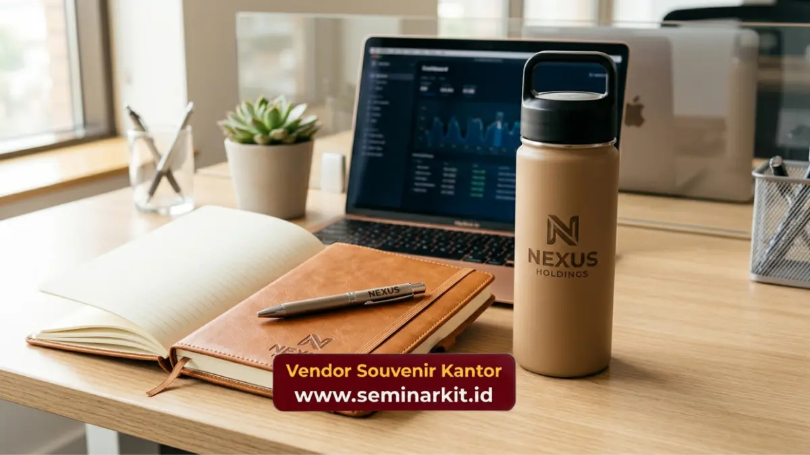

Manfaat souvenir employee appreciation bagi perusahaan meliputi peningkatan engagement karyawan, penguatan loyalitas jangka panjang, serta pembentukan citra perusahaan sebagai tempat kerja yang peduli terhadap kesejahteraan timnya.
Dampak ini terlihat baik secara langsung maupun bertahap dalam budaya kerja organisasi.
- Souvenir employee appreciation memperkuat rasa dihargai karyawan secara konkret
- Program apresiasi konsisten berkontribusi pada peningkatan employee engagement
- Souvenir berkualitas membantu memperkuat citra perusahaan di mata karyawan dan calon karyawan
- Apresiasi berkelanjutan dapat mendukung upaya retensi karyawan jangka panjang
- Souvenir custom logo turut memperkuat identitas dan kebanggaan terhadap perusahaan
Memperkuat Rasa Dihargai Karyawan
Souvenir employee appreciation memberikan bentuk apresiasi yang konkret dan dapat dirasakan langsung oleh karyawan, berbeda dengan pengakuan verbal yang sifatnya sementara dan mudah terlupakan seiring waktu.
Ketika karyawan menerima souvenir yang dipersonalisasi dan berkualitas, mereka cenderung merasakan bahwa kontribusinya benar-benar diperhatikan oleh perusahaan.
Perasaan dihargai ini menjadi fondasi penting dalam membangun hubungan kerja yang sehat antara karyawan dan organisasi.
Efek psikologis dari apresiasi konkret seperti souvenir juga dapat memengaruhi motivasi kerja karyawan pada periode berikutnya, karena mereka merasa usaha yang dilakukan tidak sia-sia dan mendapatkan pengakuan yang layak.
Meningkatkan Employee Engagement Secara Bertahap
Program souvenir employee appreciation yang dijalankan secara konsisten berkontribusi pada peningkatan employee engagement, karena karyawan merasakan adanya perhatian berkelanjutan dari perusahaan terhadap kontribusi mereka.
Employee engagement yang tinggi umumnya berkorelasi dengan produktivitas kerja yang lebih baik, tingkat absensi yang lebih rendah, serta kualitas kolaborasi tim yang lebih solid.
Souvenir menjadi salah satu elemen pendukung dalam strategi engagement yang lebih besar, bersamaan dengan komunikasi internal dan program pengembangan karyawan lainnya.
Penting dicatat bahwa souvenir bukan satu-satunya faktor penentu engagement, namun kehadirannya secara konsisten dapat memperkuat efektivitas program engagement secara keseluruhan.

Mendukung Retensi Karyawan Jangka Panjang
Souvenir employee appreciation dapat mendukung upaya retensi karyawan jangka panjang dengan memperkuat ikatan emosional antara karyawan dan perusahaan, sehingga mengurangi kecenderungan karyawan untuk mencari peluang kerja di tempat lain.
Karyawan yang merasa dihargai secara konsisten cenderung memiliki tingkat kepuasan kerja yang lebih tinggi, yang pada gilirannya dapat menurunkan tingkat turnover secara bertahap.
Meskipun retensi karyawan dipengaruhi banyak faktor seperti kompensasi dan jenjang karier, apresiasi non-finansial seperti souvenir tetap memberikan kontribusi yang berarti dalam ekosistem kepuasan kerja secara keseluruhan.
Souvenir sebagai Bagian dari Strategi Retensi Holistik
Perusahaan yang efektif dalam menjaga retensi karyawan umumnya mengintegrasikan souvenir employee appreciation sebagai bagian dari strategi retensi yang lebih holistik, bukan sebagai solusi tunggal yang berdiri sendiri.
Memperkuat Citra Perusahaan di Mata Karyawan
Souvenir employee appreciation yang berkualitas turut memperkuat citra perusahaan di mata karyawan sebagai organisasi yang peduli terhadap kesejahteraan timnya, bukan hanya berorientasi pada hasil kerja semata.
Citra positif ini dapat memengaruhi bagaimana karyawan menceritakan pengalaman kerja mereka kepada lingkungan sekitar, termasuk calon karyawan potensial.
Perusahaan dengan reputasi yang baik dalam hal apresiasi karyawan cenderung lebih mudah menarik talenta berkualitas dalam proses rekrutmen.
Memperkuat Identitas Perusahaan melalui Custom Logo
Souvenir employee appreciation dengan custom logo perusahaan turut memperkuat identitas dan rasa kebanggaan karyawan terhadap organisasi tempat mereka bekerja, sekaligus menjadi media branding internal yang efektif.
Ketika karyawan menggunakan souvenir bertuliskan logo perusahaan dalam aktivitas sehari-hari, hal ini secara tidak langsung memperkuat rasa memiliki terhadap perusahaan sekaligus menjadi representasi identitas organisasi di berbagai kesempatan.
Manfaat souvenir employee appreciation bagi perusahaan mencakup penguatan rasa dihargai karyawan, peningkatan employee engagement, dukungan terhadap retensi jangka panjang, serta penguatan citra dan identitas perusahaan.
Dampak-dampak ini menjadikan souvenir employee appreciation sebagai investasi strategis, bukan sekadar pengeluaran operasional biasa.
Untuk mewujudkan program apresiasi karyawan yang berkualitas dan berkesan, kunjungi vendorsouvenirkantor.web.id dan konsultasikan kebutuhan souvenir employee appreciation perusahaan Anda bersama tim kami.

Banner promosi: klik gambar untuk langsung terhubung ke WhatsApp tim sales.